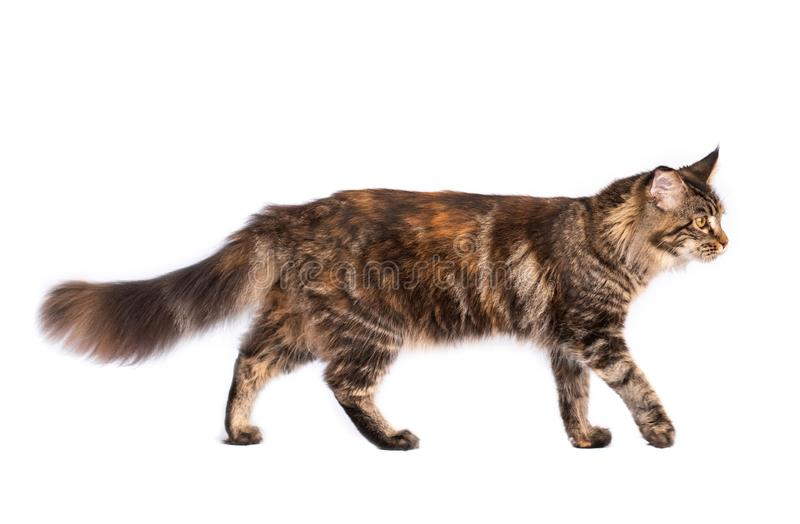
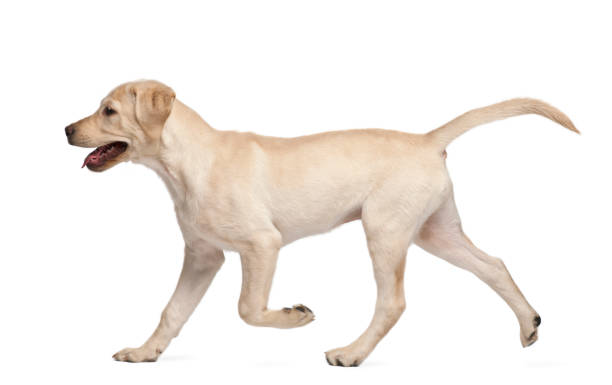
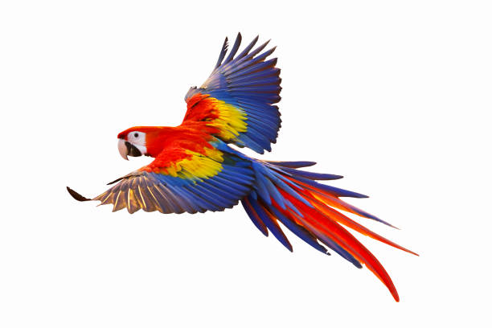
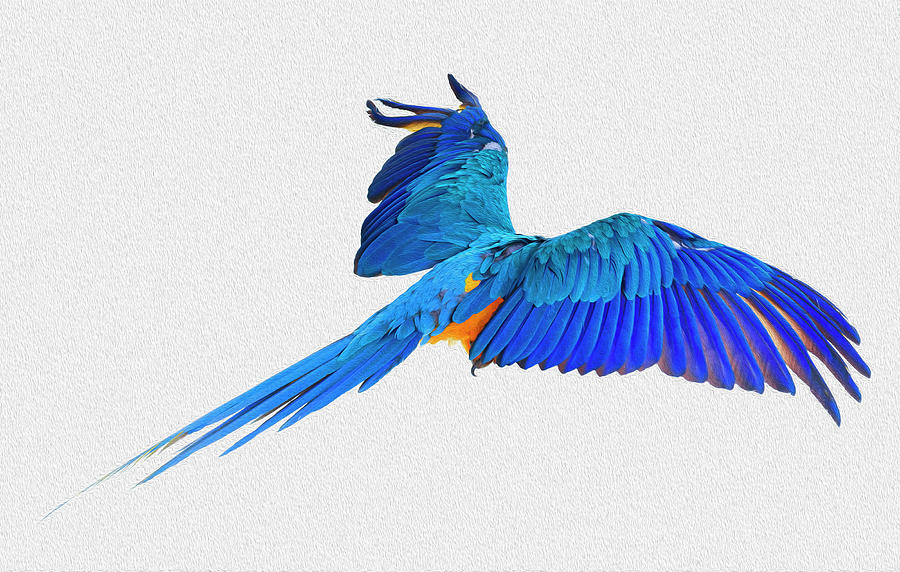

PAWS & CLAWS
Welcome to our shop! Adopt as many animals as you'd like!
Return to Main Site
Adopter's Name:
Adopter's Phone:
Adopter's Email:
 
Select a Category: (Press Search After)
Birds
Cats
Dogs
 
YOUR ADOPTIONS